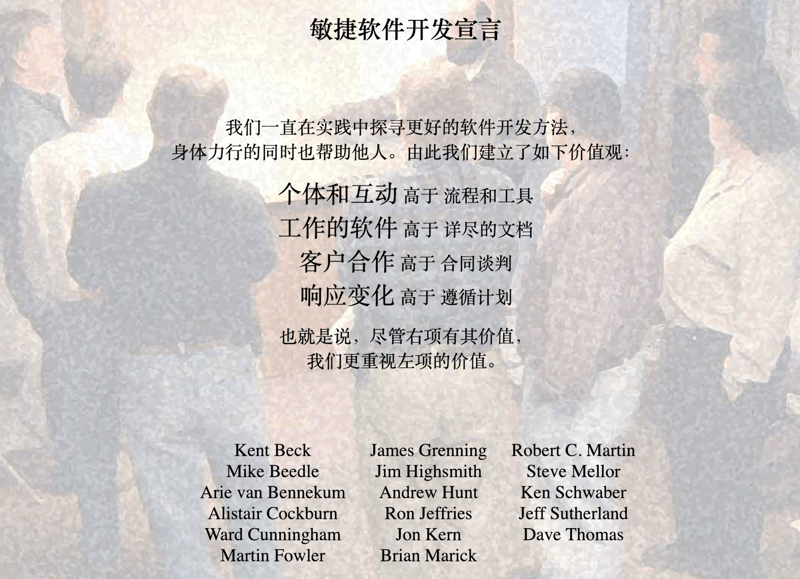

- 00 开篇词 你为什么应该学好软件工程？.md
- 01 到底应该怎样理解软件工程？.md
- 02 工程思维：把每件事都当作一个项目来推进.md
- 03 瀑布模型：像工厂流水线一样把软件开发分层化.md
- 04 瀑布模型之外，还有哪些开发模型？.md
- 05 敏捷开发到底是想解决什么问题？.md
- 06 大厂都在用哪些敏捷方法？（上）.md
- 07 大厂都在用哪些敏捷方法？（下）.md
- 08 怎样平衡软件质量与时间成本范围的关系？.md
- 09 为什么软件工程项目普遍不重视可行性分析？.md
- 10 如果你想技术转管理，先来试试管好一个项目.md
- 11 项目计划：代码未动，计划先行.md
- 12 流程和规范：红绿灯不是约束，而是用来提高效率.md
- 13 白天开会，加班写代码的节奏怎么破？.md
- 14 项目管理工具：一切管理问题，都应思考能否通过工具解决.md
- 15 风险管理：不能盲目乐观，凡事都应该有B计划.md
- 16 怎样才能写好项目文档？.md
- 17 需求分析到底要分析什么？怎么分析？.md
- 18 原型设计：如何用最小的代价完成产品特性？.md
- 19 作为程序员，你应该有产品意识.md
- 20 如何应对让人头疼的需求变更问题？.md
- 21 架构设计：普通程序员也能实现复杂系统？.md
- 22 如何为项目做好技术选型？.md
- 23 架构师：不想当架构师的程序员不是好程序员.md
- 24 技术债务：是继续修修补补凑合着用，还是推翻重来？.md
- 25 有哪些方法可以提高开发效率？.md
- 26 持续交付：如何做到随时发布新版本到生产环境？.md
- 27 软件工程师的核心竞争力是什么？（上）.md
- 28 软件工程师的核心竞争力是什么？（下）.md
- 29 自动化测试：如何把Bug杀死在摇篮里？.md
- 30 用好源代码管理工具，让你的协作更高效.md
- 31 软件测试要为产品质量负责吗？.md
- 32 软件测试：什么样的公司需要专职测试？.md
- 33 测试工具：为什么不应该通过QQ微信邮件报Bug？.md
- 34 账号密码泄露成灾，应该怎样预防？.md
- 35 版本发布：软件上线只是新的开始.md
- 36 DevOps工程师到底要做什么事情？.md
- 37 遇到线上故障，你和高手的差距在哪里？.md
- 38 日志管理：如何借助工具快速发现和定位产品问题 ？.md
- 39 项目总结：做好项目复盘，把经验变成能力.md
- 40 最佳实践：小团队如何应用软件工程？.md
- 41 为什么程序员的业余项目大多都死了？.md
- 42 反面案例：盘点那些失败的软件项目.md
- 43 以VS Code为例，看大型开源项目是如何应用软件工程的？.md
- 44 微软、谷歌、阿里巴巴等大厂是怎样应用软件工程的？.md
- 45 从软件工程的角度看微服务、云计算、人工智能这些新技术.md
- 一问一答第1期 30个软件开发常见问题解决策略.md
- 一问一答第2期 30个软件开发常见问题解决策略.md
- 一问一答第3期 18个软件开发常见问题解决策略.md
- 一问一答第4期 14个软件开发常见问题解决策略.md
- 一问一答第5期 22个软件开发常见问题解决策略.md
- 学习攻略 怎样学好软件工程？.md
- 特别放送 从软件工程的角度解读任正非的新年公开信.md
- 结束语 万事皆项目，软件工程无处不在.md
05 敏捷开发到底是想解决什么问题？
你好，我是宝玉，我今天想跟你聊聊“敏捷开发”。
关于敏捷开发的实际应用，现在无外乎有以下几种常见的情形：
-
很多团队想敏捷开发，但不知道该怎么上手；
-
有的团队已经应用了一些敏捷开发的实践，然而效果不理想，不知道是敏捷开发的问题，还是自己实践方式不得当；
-
有的团队听说了敏捷开发，但是并不知道它是什么。
为什么会这样呢？今天我们就围绕敏捷开发来谈一谈，看看敏捷开发是什么，能帮助我们解决哪些问题，要不要实施敏捷开发，以及怎么能应用好敏捷开发。
什么是敏捷开发？
那什么是敏捷开发呢？有人认为：
-
敏捷开发就是 Scrum、极限编程；
-
敏捷开发就是每天站立会议、每两周一个 Sprint（字面意思是冲刺，可以理解为迭代）；
-
敏捷开发就是把需求变成故事，把故事写在便签上贴到白板，然后根据状态移动到不同的列；
-
敏捷开发就是用看板软件来管理项目。
然而，这些是敏捷开发的真正含义吗？
要理解敏捷开发，我们先要了解其诞生背景。在 2001 年那会，瀑布模型还是主流，我们知道，瀑布模型是一种“重型”的开发模式，整个流程走完通常周期很长，少则数月，多则数年。长周期导致风险增加、难以响应变化。
于是由瀑布模型衍生出很多模型，试图去改善瀑布模型存在的问题，我已经在上一篇文章中给你介绍了一些。不过除了介绍的那些以外，在当时还有一些不怎么有名，而现在却如雷贯耳的轻量级开发方法，例如极限编程（Extreme Programming，XP）、Scrum 等。
2001 年初，17 位代表上述各种轻量级软件开发过程流派的领军人物聚集在一起，讨论替代瀑布模型这种重量级软件开发过程的新方法。
但是没能达成一致，所以退而求其次，把大家都认同的理念整理出来，也就是后来的敏捷宣言。这些人还一起成立了敏捷联盟。

图片来源：敏捷开发宣言
我们再回头来看前面大家对敏捷的定义，其实都是在从方法论、工具等方面解释敏捷开发。而敏捷宣言指出：
敏捷不是一种方法论，也不是一种软件开发的具体方法，更不是一个框架或过程，而是一套价值观和原则。
现实中关于敏捷的讨论，更多的是在讨论各种方法论和工具。不可否认，这些方法论和工具，能帮助团队“敏捷”起来，但它们和敏捷开发之间的关系，更像是“术”和“道”的关系。
各种敏捷框架、方法论和工具，就像是“术”，告诉你敏捷开发的方式，而敏捷则是“道”，是一套价值观和原则，指导你在软件项目开发中做决策。
这么说还是比较抽象，我给你举个例子。
敏捷开发中流行的站立会议，主要目的是为了保证团队成员充分的沟通，遇到困难可以及时寻求帮助。但是如果每天的站立会议流于形式，并不能起到有效的目的，则应该减少频度，甚至取消换成其他方式。
要不要在你的项目开发中使用站立会议，判断的依据就在于这样做是不是符合敏捷的价值观和原则。
也就是说，当你开发做决策的时候，遵守了敏捷开发的价值观和原则，不管你是不是用 Scrum 或者极限编程，那么都可以算是敏捷开发。
敏捷开发想解决什么问题？
如果你仔细读了敏捷宣言，你会发现，宣言中右边的内容其实都是瀑布模型核心的内容：流程和工具、详尽的文档、合同谈判、遵循计划。
虽然敏捷开发并未对瀑布模型的价值进行否定，但也表明了瀑布模型做的还不够好，同时提出了一套自己的价值观。
比如说，我们开始做一个新项目，需要从客户那里收集整理需求，如果按照传统的软件开发模式，我们需要在开发前获得所有需求，然后和客户签订合同，在发布前都不会轻易修改需求。
但是如果我们采用敏捷开发模式来开发项目，那这样做显然违背敏捷的价值观：“客户合作高于合同谈判”。
所以如果是敏捷开发，在每个迭代后，都应该向客户收集反馈，然后在后面的迭代中，酌情加入客户反馈修改的内容。
结合敏捷开发提出的背景，你其实不难发现，敏捷开发就是想解决瀑布模型这样的重型软件开发方法存在的问题，用一种轻量的、敏捷的方法来改善甚至是替代它。
这些年敏捷开发也是一直这么做的。瀑布模型的典型问题就是周期长、发布烦、变更难，敏捷开发就是快速迭代、持续集成、拥抱变化。
如果用敏捷的方式盖房子
在讲瀑布模型的时候，我拿盖房子举了个例子，如果改成用敏捷开发的模式盖房子，则会是这样子的：
-
客户想要盖一栋房子（初步的想法）。
-
产品经理和客户进行了初步的沟通，把用户的需求写成了一个个用户故事（用简单的用户故事代替繁重的需求文档），例如：
作为一个上班族，我想要一个卧室，以便于休息；
作为一个家庭主妇，我想要一个厨房，以便于做饭。
-
施工人员根据用户故事和客户进一步沟通（客户合作高于合同谈判），然后对用户故事进行设计和实现；
-
每个用户故事开发时，还要给一个测试机器人编写测试脚本，让机器人可以自动测试（大量采用自动化测试），并且做好的用户故事可以随时被测试验收（随时发布，持续集成）；
-
每个 Sprint 四个星期时间（时间盒子，迭代时间固定）；
-
第一个 Sprint 搭了个草棚，一张床就是卧室，厕所就挖了一个坑，厨房还来不及搭建（每个 Sprint 会选择高优先级的用户故事），屋顶还在漏水（每个 Sprint 会定期发布，客户可以随时看到可用版本，即使还不完整）；
-
第二个 Sprint 有了简易厨房，同时修复了屋顶漏水的毛病（每个 Sprint 不仅完成用户故事，还会修复 Bug）；
-
第三个 Sprint 升级成了小木屋，但是忘记加上窗户（敏捷推崇自动化测试，但可能会测试不完备）；
-
第四个 Sprint 升级成了砖瓦房，窗户也开好了，客户可以入住。但是这时候客户发现一家三口的话，完全不够用，需要扩建到 3 个卧室。于是决定下个迭代改成 3 个卧室（咱们还是讨论情感 房子 票子 比较好 ）；
-
第五个 Sprint，升级成了 3 个卧室，升级过程中把厨房下水道弄坏了（迭代过程中可能会导致质量不稳定）；
-
第六个 Sprint，修复了下水道的问题，房子也装修好了（迭代中不断完善）；
-
客户验收使用（上线）。
用敏捷开发的方式，不再像瀑布模型那样有严格的阶段划分，会在迭代中不断完善；不再写很多文档，而是和客户一起紧密合作；不再抵制需求变更，而是即时响应变更；不再等到测试阶段才发布，而是随时发布，客户随时可以看到东西。
当然，采用敏捷开发的模式也存在一些问题，例如全程需要客户参与，由于测试相对少一些 ，问题也会相应多一些。
敏捷开发和瀑布模型的差异
由于我大学时学软件工程，那时学的就是瀑布模型，毕业后很多年的项目开发都是以瀑布模型为主的，所以我在刚开始去看敏捷开发，总会以瀑布模型的方式类比敏捷开发，实践的时候也难以摆脱瀑布模型的影响。
直到近些年，我完整的在日常项目中反复实践敏捷开发，才逐步领会到瀑布模型和敏捷开发的一些差别。
这些年敏捷开发，已经逐步发展出一套 “Scrum + 极限编程 + 看板” 的最佳实践，Scrum 主要用来管理项目过程，极限编程重点在工程实践，而看板将工作流可视化。
我将基于 Scrum 和极限编程的实践，来对比一下敏捷开发模型和瀑布模型的差异。
- 敏捷开发是怎么做需求分析的？
瀑布模型的一个重要阶段就是需求分析，要有严谨的需求分析，产生详尽的需求分析文档。而敏捷开发的需求，主要是来源于一个个小的用户故事，用户故事通常是写在卡片上的一句话，在 Sprint 的开发中，再去确认需求的细节。
比如一个用户登录网站的需求，在用户故事里面就是一句话：
作为用户，我想登录网站，这样可以方便浏览。
好处是减少了大量需求文档的撰写，可以早些进入开发。但这个对开发人员在需求理解和沟通的能力上要求更高了。
- 敏捷开发是怎么做架构设计的？
瀑布模型在需求分析完了以后，就需要根据需求做架构设计。而在敏捷开发中，并不是基于完整的用户需求开发，每个 Sprint 只做一部分需求，所以是一种渐进式的架构设计，当前 Sprint 只做适合当前需求的架构设计。
这种渐进式的架构设计，迭代次数一多，就会出现架构满足不了需求的现象，产生不少冗余代码，通常我们叫它技术债务，需要定期对系统架构进行重构。
- 敏捷开发怎么保证项目质量？
瀑布模型在编码完成后，会有专门的阶段进行测试，以保证质量。在敏捷开发的 Sprint 中，并没有专门的测试阶段，这就依赖于开发功能的同时，要编写单元测试和集成测试代码，用自动化的方式辅助完成测试。
相对来说，这种以自动化测试为主的方式，质量确实是要有些影响的。
微软的 Windows 就是个很好的例子，在 Windows 10 之前，Windows 的开发模式是传统的类瀑布模型，有很长一段测试的时间，质量有很好的保障，Windows 10 开始，采用的是敏捷开发的模式，每月发布更新，稳定性要稍微差一些。
- 敏捷开发是怎么发布部署的？
瀑布模型通常在编码结束后，开始部署测试环境，然后在测试阶段定期部署测试环境。测试验收通过后，发布部署到生产环境。
在敏捷开发中，这种持续构建、持续发布的概念叫持续集成，因为整个过程都是全自动化的，每次完成一个任务，提交代码后都可以触发一次构建部署操作，脚本会拿最新的代码做一次全新的构建，然后运行所有的单元测试和集成测试代码，测试通过后部署到测试环境。
持续集成是一个非常好的实践，极大的缩短和简化了部署的流程，而且自动化测试的加入也很好的保证了部署产品的质量。前期搭建整个持续集成环境需要一定技术要求。
- 敏捷开发的 Sprint 和迭代模型的迭代有什么区别？
在上一章我介绍了增量模型和迭代模型，这两种也是一种快速迭代的方式，那么敏捷开发和迭代模型的区别是什么呢？
我们假设有两个团队，都要实现一个简单的用户系统，一个团队用迭代模型，一个团队用敏捷开发（Scrum），一个迭代 /Sprint 的时间周期都是 2 周（10 个工作日）。
迭代模型所在的团队，产品经理会先花 2 天时间去分析需求，写成需求分析文档，架构师会花 3 天时间来做设计，程序员会花 3 天时间编码，测试再花 2 天时间去测试，最后上线用户系统。
再看敏捷开发的团队，Product Owner（类似于产品经理）会把需求拆分成了几个简单的用户故事：用户登录、用户注册、找回密码、修改资料，然后放到当前 Sprint 的 Backlog（任务清单），Team（开发团队）成员开始从 Backlog 选择用户故事。
程序员 A 选了“用户登录”这个用户故事，他会去找 Product Owner 确认需求细节，之后动手实现这个用户故事。
功能完成后，同时程序员 A 还写了单元测试代码和集成测试代码，对登录的功能写了自动化测试。完成后，通过持续集成工具测试和部署到测试环境。部署完成后，用户登录功能就可以进行使用了。
这个过程，程序员 A 可能花了 4 天时间，做完“用户登录”这个用户故事之后，他又开始继续选取“找回密码”的用户故事来做，4 天时间也完成了。
其他程序员也和程序员 A 一样，他们也会从 Backlog 选择一些用户故事来做。
当团队中第 1 个用户故事部署完之后，测试人员就开始帮助测试，发现的 Bug 都提交到了 Backlog，程序员们在完成用户故事后，开始着手修复这些 Bug，正好在最后 2 天都修复完成。
从上面的例子，你可以看出，迭代模型本质上是一个小瀑布模型，所以在一个迭代里面，需要完整的经历从需求分析，到设计、编码、测试这几个完整的阶段。
所以像瀑布模型一样，刚开始测试的时候是不稳定的，到测试后期才逐步稳定下来，一般迭代前期也会相对轻松一点，而后期测试阶段可能会时间很紧张。
敏捷开发的 Sprint 中，没有像瀑布模型那样严格的开发阶段划分，而是一个个循环迭代的 Sprint。举例来说，一个瀑布模型的项目，可能会按照阶段分成：2 周需求分析，2 周设计，4 周编码，2 周测试，然后上线发布，一共 10 周。如果用敏捷开发的方式来进行，那么可能会是每 2 周一个 Sprint，每个 Sprint 结束后，都会发布上线，每次发布的可能只是完整功能的一部分，但是每次发布的都是一个可用的版本，通过多个 Sprint 的迭代，最终完成项目开发。
具体到每一个 Sprint 的开发周期中，在一个 Sprint 中会有多个小的开发任务，这些开发任务主要是新功能的开发和 Bug 的修复。由于每个 Sprint 周期很短，所以不能像瀑布模型那样有充足的时间去做需求分析、设计和测试，那么敏捷开发中怎么保证质量呢？
在敏捷开发中，通常用“用户故事”这样的方式来代替传统的需求分析，也就是以用户故事的形式，对一个需求进行简单的描述，配合关键的测试用例，并且和需求方的紧密沟通，让开发人员可以理清楚需求；通过“只做刚刚好的设计”来节约设计上的时间；通过“自动化测试”、“持续集成”来提升测试效率。
相对来说，敏捷开发中，整个 Sprint 的节奏是比较恒定，产品也是相对稳定的，即使用户故事没有完成，也不影响版本的发布。
因此，敏捷开发更注重软件开发中人的作用，需要团队成员以及客户之间的紧密协作。
该不该选择敏捷开发？
该不该选择敏捷开发，是很多团队纠结的问题。毕竟关于敏捷，有很多在中国落地失败的例子，是不是这种方法在国内水土不服？
其实，敏捷开发无论国内还是国外，大厂还是小厂，都已经有无数成功案例。这些年，软件工程中一些好的实践，像持续集成、测试驱动开发、结对编程、看板等都来自于敏捷开发。可以肯定，敏捷开发是一种非常好的软件开发模式。
但在应用上，也确实需要满足一些条件才能用好，例如：
-
团队要小，人数超过一定规模就要分拆；
-
团队成员之间要紧密协作，客户也要自始至终深度配合；
-
领导们的支持。敏捷需要扁平化的组织结构，更少的控制，更多的发挥项目组成员的主动性；
-
写代码时要有一定比例的自动化测试代码，要花时间搭建好源码管理和持续集成环境。
所以在选择敏捷开发这个问题上，你先要参考上面这些条件。
因为敏捷开发对项目成员综合素质要求更高，做计划要相对难一些。如果团队大、客户不配合、领导不支持，再好的敏捷方法也很难有效实践起来。
如果你要实践敏捷开发，建议先找个小项目进行试点，能证明可行了，再进一步推广。有条件的话，可以和一些顾问公司合作，请人做专门的培训和指导。
如果不具备条件，应该考虑先把其中一些好的实践用起来，比如说持续集成、每日站会、自动化测试等。
总结
我们今天一起学习了什么是敏捷开发，也就是敏捷开发是一套价值观和原则。也对比了瀑布模型和敏捷开发，其中的差异还是很大的。
瀑布模型面向的是过程，而敏捷开发面向的是人。敏捷开发要解决的，恰恰是瀑布模型中存在的一些问题。
最后，在要不要用敏捷开发这个问题上，不用过于纠结，看好敏捷开发，那就放心去用，觉得时机还不成熟、还不够了解，就先试点或者只是先借鉴其好的实践。
软件开发，最核心的是人，而不是用什么方法，以前没有敏捷开发只有瀑布模型的时候，也一样诞生了大量伟大的软件，像 Windows、Office。现在有敏捷开发，更多的是让我们多了一些选择。
在下一篇文章，还会再从大厂如何应用敏捷开发的角度，继续讲一讲敏捷开发的应用。
另外，敏捷开发涉及内容还是比较多，如果想有更多了解，可以阅读一些书籍作为专栏的补充。
除了“学习攻略”中推荐的一些书，还有像《用户故事与敏捷方法》《敏捷武士︰看敏捷高手交付卓越软件》等这些敏捷实践的书籍也可以辅助看看。